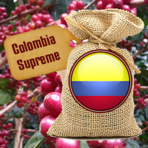

Colombia Supremo Coffee

- Colombian Supremo coffee is grown high in the Colombian Andes and is famous for it’s smooth pleasant acidity, smooth finish, nutty overtones and rich medium to full body.
- Supremo is a coffee grading term in Colombia. Supremo coffee beans are slightly larger, the beans are a screen size of 17 and 18.
- This type is the largest bean size grading for Colombian coffee.
- If you are new to buying freshly roasted coffee and don’t know where to start – you can’t go wrong starting out with our Colombian Supremo.
- Day or night, this coffee remains a consistent favorite and will not disappoint.